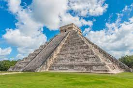
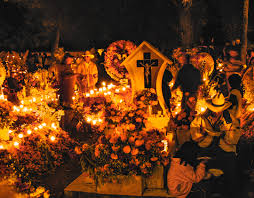

El sitio arqueológico de Chichén Itzá fue una ciudad maya del periodo comprendido entre los años 525, cuando fue fundada, y el 1.100 d.C. Su nombre significa "boca del pozo de los itzá" en referencia al cenote sagrado que se encuentra en la zona.
Tulum es un pueblo con un ambiente bohemio chic, playas de arena blanca, ruinas mayas y cenotes de agua cristalina que se han convertido en un destino imprescindible de México para los viajeros que buscan un paraíso lejos de los hoteles todo incluido de Cancún y Playa del Carmen.
San Cristóbal de las Casas es una ciudad en la zona alta del estado de Chiapas al sur de México. Es conocida por su arquitectura colonial bien conservada, como la Catedral de San Cristóbal de color amarillo y con siglos de antigüedad ubicada en el Parque Central. El Museo de Los Altos, en el antiguo convento barroco Santo Domingo de Guzmán, tiene exhibiciones de tejidos e historia regional. Fuera del edificio hay un mercado donde se venden tejidos coloridos y otras artesanías.
Bacalar es una población del estado mexicano de Quintana Roo, situada en el sur de su territorio a unos 40 km al norte de la capital, Chetumal. Bacalar se encuentra situada en la ribera de la Laguna de Bacalar, la más importante de las lagunas del sur quintanarroense y de gran atractivo turístico.
El pozole es un caldo tradicional mexicano hecho a base de granos de maíz nixtamalizados, comúnmente de la variedad cacahuazintle, al que se agregan carnes, verduras y especias muy variadas según la región.
La cochinita pibil es un guiso correspondiente a la gastronomía de Yucatán, basado en carne de cerdo adobada en achiote, envuelta en hoja de plátano y cocida dentro de un horno de tierra usando una técnica prehispánica conocida como píib.

Se cree que fueron las madres Agustinas del Convento de Santa Mónica, en Puebla, quienes en 1821 crearon los Chiles en Nogada con motivo de celebración de la Independencia de México y homenaje a Agustín de Iturbide.

El Día de Muertos en la visión indígena implica el retorno transitorio de las ánimas de los difuntos, quienes regresan a casa, al mundo de los vivos, para convivir con los familiares y para nutrirse de la esencia del alimento que se les ofrece en los altares puestos en su honor.
Quetzalcóatl, dios creador del hombre, el Señor de la Aurora y la Serpiente Nube de Lluvia; el que dio al hombre el maíz, el pulque y el calendario, lo que lo convirtió en una deidad común entre diversas civilizaciones mesoamericanas.
El quinto sol es el que iluminó a los aztecas, el que los acompañó en su peregrinar desde la mítica Aztlán hasta el islote que se convertiría en Tenochtitlan, el que inspiró su mitología y por ello muchos de sus relatos fundacionales, el que atestiguó cómo un astuto enemigo logró someterlos.